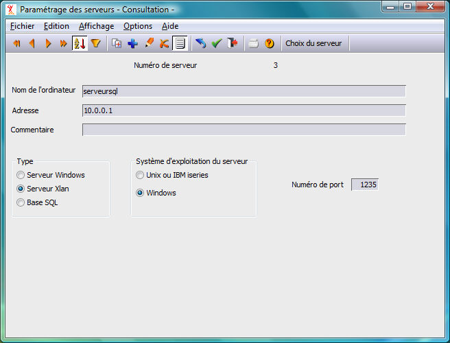

On crée un serveur dans la table des serveurs des postes client par le choix "serveurs" du menu "paramétrage" d'Harmony.dhop.
On garnira les champs suivants :
Nom de l'ordinateur : Nom Harmony du serveur. Il est conseillé de prendre ici son nom NetBios (nom qui apparaît dans le voisinage réseau).
Adresse : Indiquer l'adresse IP du serveur SQL. Dans le cas particulier de la configuration d'un poste client sur le serveur, indiquer 127.0.0.1 qui correspond toujours à l'adresse du serveur lui-même (localhost). De même pour les éditions Terminal Server de Windows (TSE), lorsque le serveur d'applications est aussi le serveur de données.
Type : Serveur Xlan
Système d'exploitation : en fonction du serveur.
Numéro de port : 1235 par défaut ou la valeur de "NuméroService" de Divalto.ini du serveur.
Voir également : la configuration sur le serveur.
